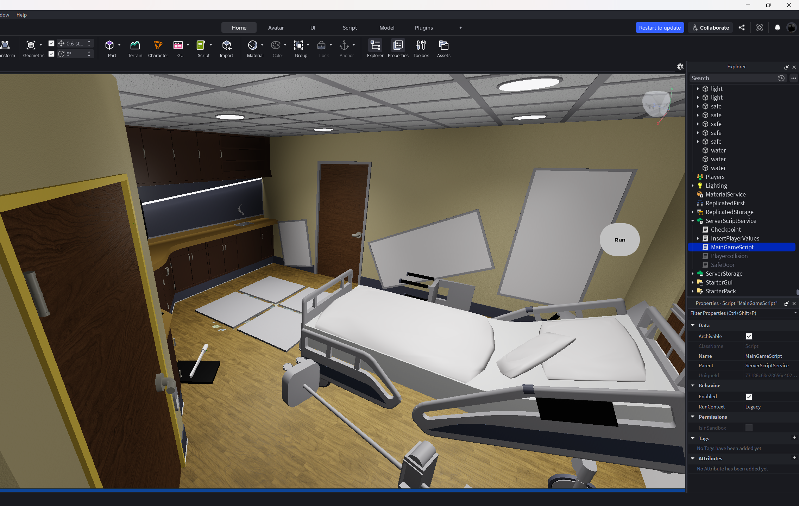
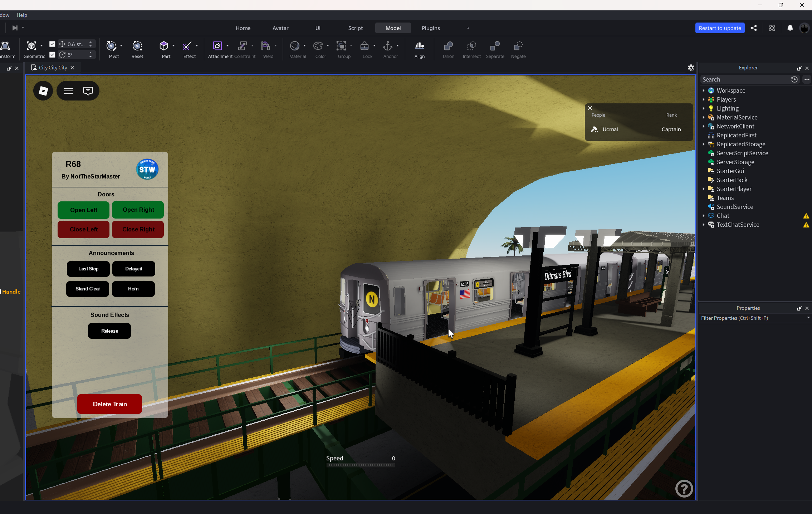

Code related projects

Keysheets
Xcode
Keysheets was a special project for me since I am a musician. Within this project, I used data structures such as classes to keep user data reusable. This app includes the ability to create songs, save songs, search throughout a user's library, and transpose the songs key all within the same device. Organization within this project thanks to my previous ones helped me to create functions and styles that I reused throughout the apps UI. Beyond now, my future plans for this app are to continue to keep it more user sided and friendly while adding on more useful features for musicians.

Movie app
Xcode/TMDB API
This movie app was one of my first deep dives into swiftData and private Apis. Following a tutorial, I was able to create an app that lets the user look through the TMDB database of movies and save a movie. This app also taught me about error handling using enums to catch errors within every function of code and was the foundation for Keysheets.

Pokemon app
Xcode/PokeAPI
This project was a fun and simple app I created to play around with Apis and to try to understand API formatting more thoroughly. Within this app, you're able to write down a Pokémon's name which in my code goes through a function that makes the text lowercase, looks through the database through a link formatter and then displays properties such as its sprite and id with the information displayed. It also gives you the option to save it onto a list of your favorite Pokémon.
Past relevant work

Horror game
Roblox Studio (Lua)
Before starting any sort of front-end development, my main way of entertainment during quarantine was Roblox. In this platform I used properties such as event listeners to create a linear horror game along with puzzles and a monster which is unfortunately now broken. Creating this project allowed me to play around with UI's and properties which was a steppingstone when designing future app and web UIs.

Train game/system
Roblox Studio (Lua)
One of my first ever introductions to coding was also in Roblox. I started by creating 3d models of NYC subway trains and as I got better, started working on UI's aswell alongside functioning systems for them like doors, lights and sounds. Beyond this, I created working signal systems which was one of my final projects in Roblox before moving on other work.